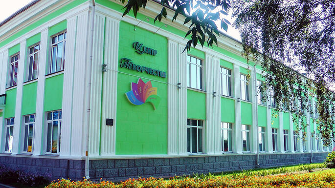

Адрес:
247500, Республика Беларусь, Гомельская область,
г. Речица, ул. Советская, д. 99
Телефон: +375 2340 9 94 74
E-mail: centre_tvorchestva@rechitsa-edu.gov.by
Режим работы
Понедельник – пятница: 8:00 – 20:00
Суббота: 9:00 – 17:00
Воскресенье: выходной
Занятия в объединениях по интересам: согласно расписанию
Руководство
Должность
Фамилия, имя, отчество
Директор
Чигринева Светлана Николаевна
Заместитель директора по учебно-воспитательной работе
По вопросам зачисления обращаться к руководству
Запись в кружки и творческие объединения осуществляется по телефону +375 2340 9 94 74 или при личном посещении центра.
Об учреждении

Основными задачами государственного учреждения образования «Речицкий центр творчества детей и молодежи» являются:
Выявление и развитие творческих способностей детей и молодежи, удовлетворение их индивидуальных образовательных потребностей.
Организация содержательного досуга, создание условий для самореализации и социального становления личности.
Реализация образовательных программ дополнительного образования по различным направлениям: хореография, вокал, изобразительное искусство, декоративно-прикладное творчество, техническое моделирование, туризм и краеведение.
Проведение массовых мероприятий, конкурсов, фестивалей, выставок и концертов для учащихся города и района.
Дополнительные ресурсы
Вышестоящая организация: Отдел образования Речицкого районного исполнительного комитета
Телефон: +375 2340 6 56 31
Факс: +375 2340 6 56 31
E-mail: priemnoy-roo@rechitsa-edu.gov.by
Время работы отдела образования:
Понедельник-пятница: 8:00 – 13:00, 14:00 – 17:30
Предпраздничные дни: 8:00 – 13:00, 14:00 – 16:30
Направления деятельности: более 50 кружков и творческих объединений для детей от 5 до 18 лет.